自制纸飞镖
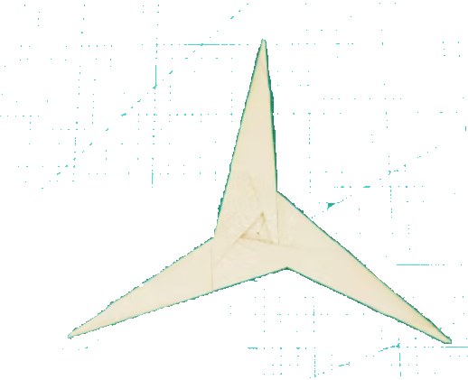
自制纸飞镖 #
报告人：23 学堂 小莫
ppt版本可以点击这里
题目分析 #
题目原文：Make a returning boomerang from a sheet of paper by folding and/or cutting. Investigate how its motion depends on relevant parameters. 用一张纸通过折叠和/或裁剪制作一个能返回的飞镖。研究其运动如何取决于相关参数。
解读：
- 可返回：射出后能返回原位(比如落点控制在原点50cm内)，而不是只出现速度反向或返回距离原点较远。这是一个重要的约束条件
- 折叠或裁剪：可允许破坏纸张，对纸张的大小、纸质和形状不做具体要求。
- 研究参数可能包括：出射速度，俯仰角，翻滚角，出射高度，初始旋转角速度，翼面形状，质心，气动中心，飞行时间，运动过程所受到的各种作用力。
预实验 #
- 准备材料：一张纸，小刀，胶水
- 制作成如图四角飞镖
- 在空旷的场地试射
- 飞镖在空中打了一个圆圈，回到发射者的位置 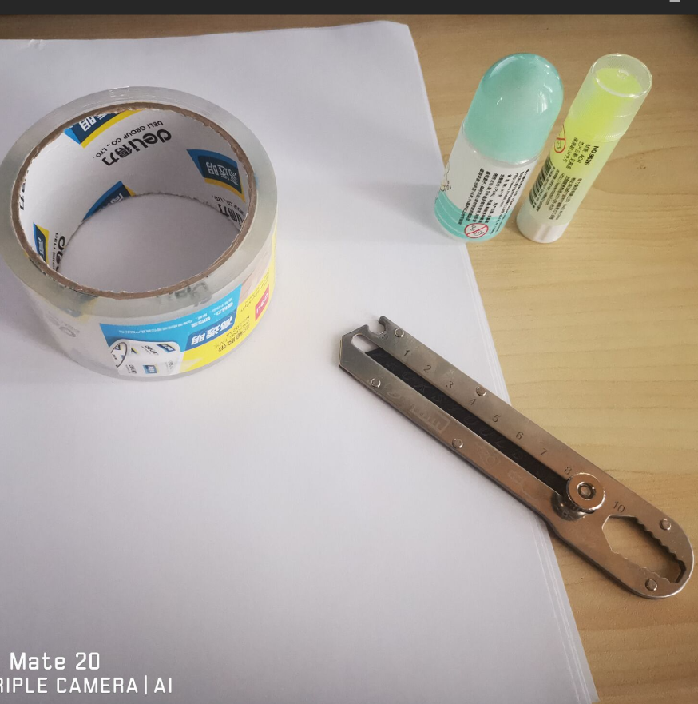
理论分析 #
运动行为的描述 #
回旋镖以一定初速度和出射角度发射，并带有的飞行轨迹大致为圆形，与地面成一个夹角 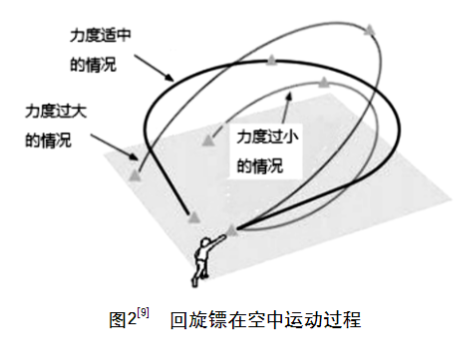
力学分析 #
设回旋镖逆时针旋转，则左侧叶面的速度为质心速度加叶面旋转的线速度，右侧叶面的速度为质心速度减叶面旋转的线速度。左右两叶面速度的速度差导致飞镖受到的升力不均匀产生升力力矩。力矩的方向与旋转轴垂直，根据陀螺的进动原理，飞镖会在空中做弧线运动直至回到人手中。 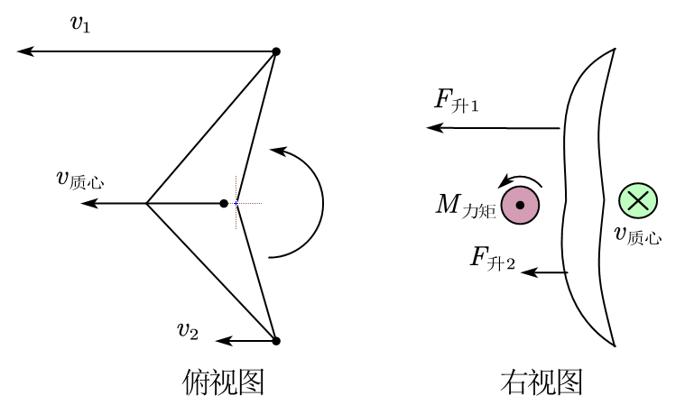
飞镖的运动可以拆成两部分：飞镖自身的进动和飞镖质心的圆周运动。
从飞镖质心的受力来看，飞镖所受到的垂直纸面的升力与重力的合力提供向心力，从而产生了近圆弧形的轨道。
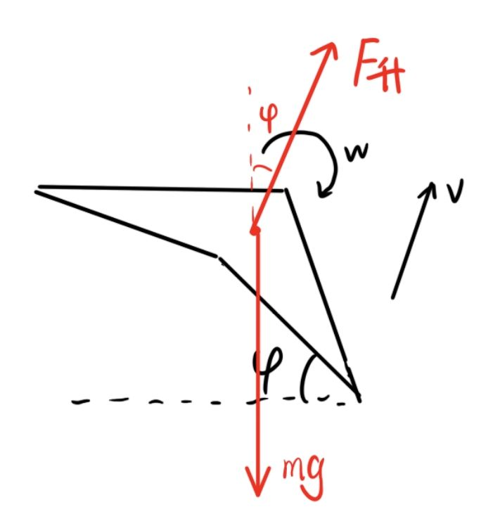
以v型回旋镖为例，假设回旋镖夹角为90度，对叶片所受力矩分析：
$$M_1=\int_0^{l_1}f_{升1}\cdot ldl$$ $$M_2=\int_0^{l_1}f_{升2}\cdot ldl$$
式中$l_1,l_2$为叶片长度，$f_{升1}$和$f_{升2}$分别为单位长度叶片所受到的升力。
由翼型升力公式： $$F_{升1}=\frac{1}{2}C_1A_1\rho v_1^2$$ $$F_{升2}=\frac{1}{2}C_2A_2\rho v_2^2$$ 式中，$C_1,C_2$为叶片截面系数，$A_1,A_2$为叶片面积，$\rho$为空气密度，$v_1,v_2$为叶片速度。 $$v_1=\omega_{自转}r_1+v_{质心}sin(\omega_{自转}t)$$ $$v_2=\omega_{自转}r_2-v_{质心}sin(\frac{\pi}{2}-\omega_{自转}t)$$
式中$r_1,r_2$为叶片1,2截面上的点到O点的距离，$\omega_{自转}$为叶面自转角速度，$v_{质心}$为质心速度。
带入进动相关公式，则进动角速度为：
$$\omega_{进动}=(M_1-M_2)/H$$
H为飞镖整体的角动量：
$$H=\int_0^{l_1} m_1(r)v_1r_1dl+\int_0^{l_2} m_2(r)v_2r_2dl=I\omega$$
(可以认为平动不影响角动量)
飞镖旋转的半径为：
$$R=\frac{F_1+F_2}{(m_1+m_2)\omega_{进动}^2}$$
影响参数：翻滚角 #
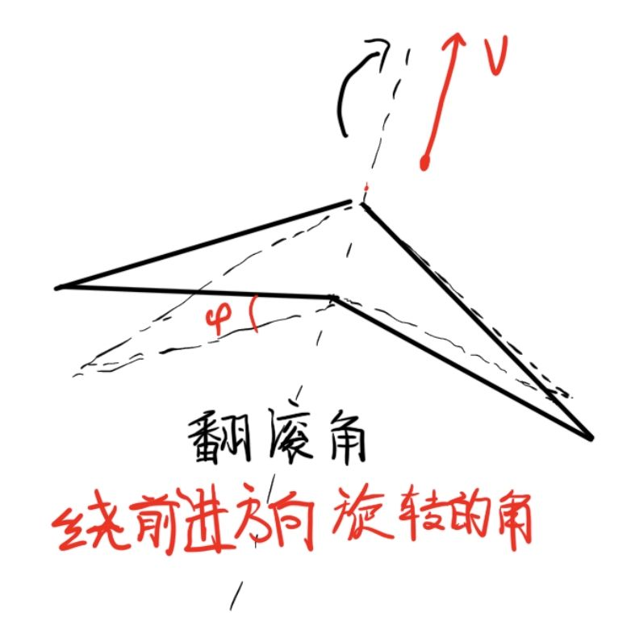 翻滚角指的是以飞镖前进方向为轴，以飞镖与地面平行为初始位置，飞镖翻滚的角度。
- 对于翻滚角接近90度的情况，正如前面所分析的，飞镖与地面相垂直，其轨迹接近一个圆。不过会在重力的作用下下降，所以轨迹是螺线。
- 对于翻滚角接近0度的情况，飞镖与地面平行，飞镖会斜向上飞出，当竖直速度为0后飞镖将返回。此时是一个比较特殊的情况，因为飞镖并不会产生向左或向右的偏移，只在竖直方向和前进方向存在位移。此时进动改变的是飞镖的俯仰角，升力和重力的合力提供飞镖飞回的回复力。
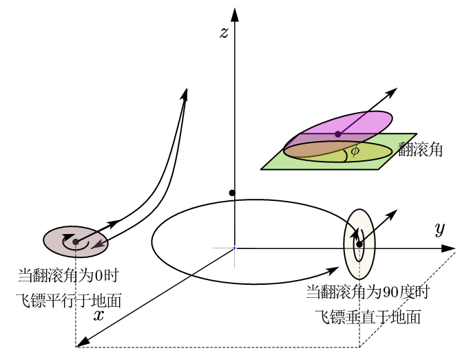
以下是对翻滚角接近0度的具体分析： 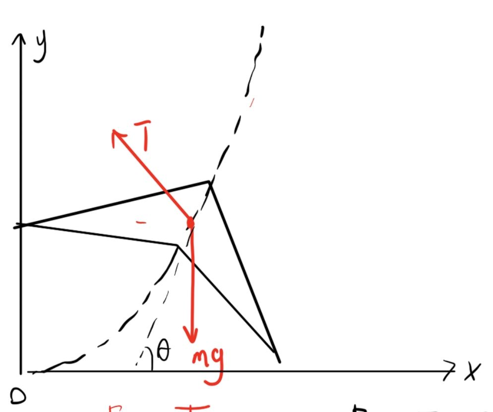 升力大小： $$F_{升}=F_{升1}+F_{升2}=\frac{1}{2}C_1A_1\rho v_1^2+\frac{1}{2}C_2A_2\rho v_2^2$$ 升力力矩： $$M=M_1-M_2=\int_0^{l_1}f_{升1}\cdot ldl-\int_0^{l_1}f_{升2}\cdot ldl=(F_1-F_2)\cdot r$$ 进动角速度： $$\omega_{进动}=\frac{M_1-M_2}{Iw_{自转}}$$
对于x方向和y方向都进行受力分析： $$ \begin{cases} m\ddot{x}=-F{升}sin\theta \ \ddot{y}=F{升}cos\theta -mg\ \theta=w_{进动}t=\frac{\dot{y}}{\dot{x}} \end{cases} $$
带入初速度$\dot{x}=v_0, \dot{y}=0$，同时将升力F视为一个常数，则可以解这个微分方程得： $$x=\frac{F{升}}{m\cdot w^2}sin(wt)$$ $$y=\frac{F_{升}}{m\cdot w^2}(1-cos(wt))-\frac{1}{2}gt^2$$
通过绘制这个关于t的参数方程即可得到飞镖的轨迹（以下是用ggb绘制的参数方程）：
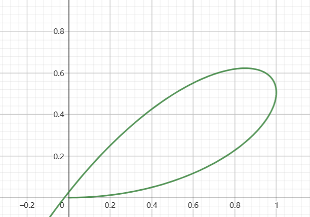
3. 对于翻滚角为任意0~90度的情况，飞镖的轨迹都是空间中的复杂曲线。
下面对任意翻滚角的飞镖进行力学分析：
飞镖具有初始的速度$v_0$和$\omega_0$，设水平出射，翻滚角为$\phi$ $$\dot{\vec{v}}=\frac{F_1+F_2}{m}\cdot\hat{\omega}-kv$$ $$\dot{\omega}=\frac{M_{升力}}{I}\cdot\hat{q}$$ 其中k是风阻系数，$\hat{q}$为与地面平行，且垂直于角速度的单位向量。
上述其实相当于一个复杂的微分方程，我们可以通过python编程的方式对飞镖的飞行路径进行求解。对于计算机来说，可以取每个运动无限小来近似求得整个数值解，或者调用matlab中的ode45函数解微分方程。
由于时间关系，对于轨迹的模拟，我暂时没空做。
不过对于其中一种特殊情况，当飞镖的翻滚角为一个合适值（实测约为45度），飞镖的升力的分力和重力刚好抵消，飞镖的轨迹近似为一个正圆。此时有：
$$F_{升}sin(\phi)=mg$$
出射角速度和速度关系探索： #
前提假设： 在理想情况下，假设飞镖与地面垂直，且此时不考虑飞镖在重力的影响下下降（事实上也不影响接下来的分析），飞镖按照一定的速度和角速度出射，我们希望它进动的角速度和转动都相等，这样飞镖的轨迹将会是标准的圆形。为了达到这一目的，我们有如下分析： $$ \begin{cases} \omega_{进动}=\frac{M_{升力}}{Iw}\ \omega_{转动}=\frac{F_{升力}}{mv}\ \omega_{进动}=\omega_{转动} \end{cases}
$$ $$\to \frac{v}{w}=\frac{F_{升力}I}{mM}$$
对于升力$F_{升力}$和升力的力矩$M_{升力}$，我们可以使用公式$F_{升}=\frac{1}{2}C_1A_1\rho v_1^2$。
但是由于技术水平和实验仪器的受限，我对升力系数的测量无能为力。不过我也找到了一种替代方案，通过实验我发现当滚翻角为45度时，飞镖的升力的分力和重力基本平衡，于是：
$$F_{升}=\sqrt{2}mg$$
通过对实验视频慢放的初略估计，我们得出初速度$v_0=6.5m/s$，角速度$w_0=10\pi rad/s$，故：
$$v_1=v_0sin(\omega_{自转}t)+w_0\cdot r=v_0t+w_0\cdot r=8.16m/s$$
$$v_2=v_0cos(\omega_{自转}t)+w_0\cdot r=v_0t+w_0\cdot r=4.83m/s$$
$$\to v_1^2:v_2^2=2.85$$
$$\to F_1:F_2=2.85=k_F$$
其中r为叶片1,2的质心到O点的距离，$\omega_{自转}$为叶面自转角速度。
同时对升力的力矩M，我们带入得:
$$M=M_1-M_2=\int_0^{l_1}f_{升1}\cdot ldl-\int_0^{l_1}f_{升2}\cdot ldl=(F_1-F_2)\cdot r=(\frac{k_F}{1+k_F}-\frac{1}{1+k_F})Fr$$
带入
$$\to \frac{v}{w}=\frac{F_{升力}I}{mM}=0.183m$$
对于人正常抛出飞镖时，如果握持点半径为r，我们可以认为人每次抛出$\frac{v}{w}$相同，什么时候能和上述比值相同呢，此时对飞镖的参数进行进一步的研究，设转动惯量$I=kmr^2$，r为叶片边缘到质心的距离 $$ \begin{cases} v=\frac{p}{m}\ w=\frac{p\times r}{I}=\frac{p\times r}{kmr^2}\ \frac{v}{m}=\frac{F_{升力}I}{mM} \end{cases} $$
$$\to k=\frac{\frac{F_{升力}I}{mM}}{r}=\frac{\frac{F_{升力}kr^2}{mM}}{r}$$ $$\to r=\frac{Mm}{F}=0.17m$$ 所以飞镖的半径制成0.17m更加合适。
影响参数：俯仰角 #
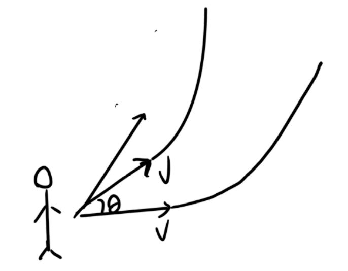
当出射俯仰角越小，飞镖飞得越远，同时由于飞行时间的增长，飞镖的速度和自转的角速度衰减比较快，飞镖所提供的升力也会减小，当升力不足以作为回复力的时候，飞镖将无法返回。
当出射俯仰角合适大的时候，飞镖能提供有效升力的时间刚好就是飞镖一个来回的时间，升力就能支持飞镖走完一个来回。
具体的分析无非是在刚才翻滚角为0度的情况下对几个方向的微分方程进行修改:
$$m\ddot{x}=-F{升}sin\theta $$ $$m\ddot{y}=F{升}cos\theta -mg$$ $$\theta=w_{进动}t=\frac{\dot{y}}{\dot{x}}$$ 只不过此时初始速度有所改变,$\dot{x}=v_0cos\theta_0, \dot{y}=v_0sin\theta_0,$，同时将升力F视为一个常数，则可以解这个微分方程得： $$x=\frac{F{升}}{m\cdot w^2}sin(wt+\theta_0)=\frac{v_0}{w}sin(wt+\theta_0)-sin(\theta_0)$$ $$y=\frac{F_{升}}{m\cdot w^2}(cos(\theta_0)-cos(wt+\theta_0))+v_0sin\theta_0-\frac{1}{2}gt^2\ =\frac{v_0}{w}(cos(\theta_0)-cos(wt+\theta_0))-\frac{1}{2}gt^2$$
同样我们通过绘制参数方程，并修改出射俯仰角，使得飞镖刚好能回到原点。通过模拟发现当出射俯仰角为18.33度时，飞镖刚好能回到原点。
影响参数：翼面形状 #
通过研究发现翼面下表面凹面相比于下表面为平面能一定程度上提升升力，这一部分会在仿真部分体现。
可以认为叶片下表面的凹陷滞留了一部分空气，使得下表面的流体流速减小，根据伯努利原理：
$$P+\frac{1}{2}V^2-\rho gH=0$$
凹面下表面的压强较大，能提高翼面受到的升力。可以认为下表面为凹面更具优越性。
实验验证 #
翻滚角 #
通过实验视频，可以看出翻滚角为0时飞镖被限制在前进的平面内，翻滚角为45度时飞镖轨迹接近一个圆，翻滚角为0度时接近螺旋下降，与理论分析相吻合。
俯仰角 #
实验表明，当俯仰角为20度左右时，飞镖能回到原点，太大的俯仰角会导致飞镖飞过头，太小的俯仰角会导致飞镖来不及回来就落地了。这点同样和理论分析相吻合。
不同形状飞镖 #
- v形飞镖由于结构不对称，所以飞行最不稳定。
- 三叶飞镖得益于对称的结构和较大的转动惯量，飞行的稳定性大大提升。
- 四角飞镖飞行较为稳定，但是由于翼面较薄，转动惯量小，飞行稳定性不如三叶飞镖
仿真模拟 #
对翼面的截面进行仿真模拟，分析哪种翼面受力最大（下表面平、凹程度不同）
模型建立与求解 #
在Linux环境下使用comsol6.0软件，对飞镖的翼面进行建模仿真。

-
选择物理场
湍流k-ω模型： k-ω模型特别适用于近壁面的湍流流动，即低雷诺数湍流。它通过考虑湍流频率ω，更好地捕捉了近壁面的流动特性。 -
建立二维模型 通过多个几何图形的布尔操作近似做出飞镖的翼面模型。

- 设置材料属性
 设置密度为1kg/m3，动力黏度为0.001Pa-s，这一步对于后面配置物理场至关重要
设置密度为1kg/m3，动力黏度为0.001Pa-s，这一步对于后面配置物理场至关重要
- 设置入口、壁、出口及流体流速
在物理场“湍流$k-\omega(spf)$”中分别设置入口位置与流体流速，确定壁与出口位置

- 划分网格
由于是求稳态解，计算量不大，可以将网格设为较细化，并按物理场进行划分

- 稳态解求解
求解类型设为稳态

仿真结果 #
- 下表面平与下表面凹面对比


通过对比两种仿真结果，可以发现，下表面凹面能显著降低下表面的流体流速，根据伯努利原理： $$P+\frac{1}{2}V^2-\rho gH=0$$ 凹面下表面的压强较大，能提高翼面受到的升力。可以认为下表面为凹面更具优越性。
- 不同攻角对比
我们通过修改入口速度为速度场可以控制流体的方向，从而计算出不同攻角下的受力与流速分布情况。如下图所示：
以下分别是攻角为2度，9度，18度的情况，流体运动方向斜向右上角
速度分布：
以下分别是攻角为2度，9度，18度的情况，流体运动方向斜向右上角


压强
以下分别是攻角为2度，9度，18度的情况，流体运动方向斜向右上角


观察这三张压强分布图可以初略的得出随着攻角$\alpha$增大，所受到的向上的升力增大。体现在飞镖的运动上，则是当飞镖的发射的仰角增大时，所受到的升力更大，飞镖更容易飞回。不过过大的升力也会导致飞镖的翻面，所以需要找到一个合适的攻角，即仰角出射。
误差分析 #
-
室外风速对实验的影响，对此，已经特意选择羽毛球场地进行实验，减小风力干扰。
-
测量仪器的误差（相机视频进行估算速度，轨迹，存在误差），如果有专业的高速摄像机，能更加准确得测量速度转速等参数，同时可以减少实验误差。
-
人作为实验者，对飞镖的操控，对飞镖的发射角度，速度等参数的控制，存在偶然性误差，如果可以制做出专门的飞镖发射器，并且固定在翻滚角和俯仰角可调节的支架上，将极大减小误差。
总结结论 #
- 飞镖的运动轨迹取决于翻滚角，当翻滚角为约为45度时，飞镖的轨迹近似为正圆。当翻滚角为0度时，飞镖先斜向上飞再返回。
- 当飞镖翻滚角为0度时，飞镖能否返回原点取决于飞镖出射的俯仰角，理论和实验均表明，当飞镖出射俯仰角约为18.3度时飞镖能返回原点。
- 翼面下表面凹面相比于下表面为平面能一定程度上提升升力。
- 不同形状飞镖，三叶飞镖由于结构对称，飞行稳定性大大提升。四角飞镖飞行较为稳定，但是由于翼面较薄，转动惯量小，飞行稳定性不如三叶飞镖。
- 对于三叶飞镖，通过理论计算其最佳出射速度和角速度比值是0.183m。
- 一般的，飞镖的半径设为0.17m更加合适，能增强飞行的稳定性。
Thanks! #
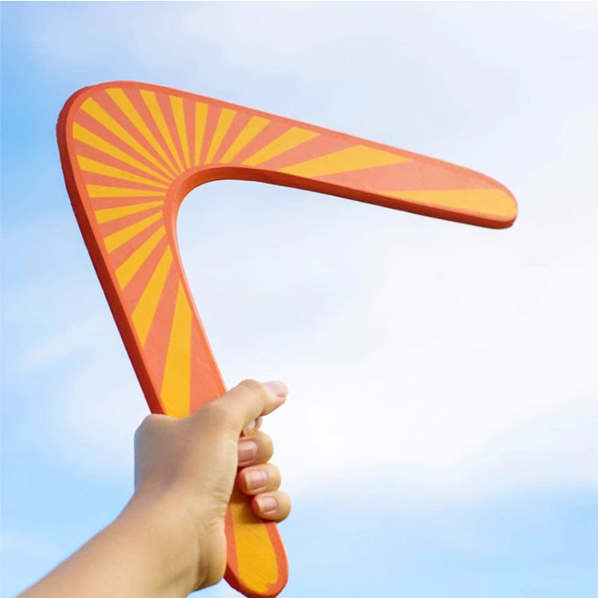